For love
vagatha and carmilla
Stayed Gone
Alastor and vox
hell´s Greatest Dad
Alastor and Luc
Loser Baby
Angel Dust and Husk
you didn´t know
Emily and charlie
poison
¿De que trata?Hazbin Hotel es una serie animada para adultos creada por la animadora, ilustradora y youtuber estadounidense-salvadoreña Vivienne Medrano -31 años- también conocida como VivziePop. De hecho, Hazbin Hotel comenzó con un piloto en YouTube en 2019, pero posteriormente obtuvo el respaldo de A24. En el canal de Vivienne Medrano ya se había publicado una serie llamada Helluva Boss, la cual ganó varios fans en redes sociales y ahora, con el spin off de Hazbin Hotel, la emoción aumentó. Hazbin Hotel se centra en la historia de Charlie Morningstar, la hija de Lucifer quien debe lidiar con la sobrepoblación en el Infierno y quien cree fielmente que la redención es posible. Por lo que abre Hazbin Hotel, un lugar para redimir a los demonios pecadores del infierno y que puedan ascender al Cielo; un sueño que parece imposible. ¿De que trata?Hazbin Hotel se ha ganado el corazón de los usuarios en redes sociales, como X -antes Twitter- y TikTok, siendo una de las mejores calificadas por la critica. Cabe resaltar que debido a la premisa y al lenguaje utilizado, Hazbin Hotel es una serie animada para adultos que ha tenido resultados bastante positivos e impactantes para el debut de su primera temporada. |
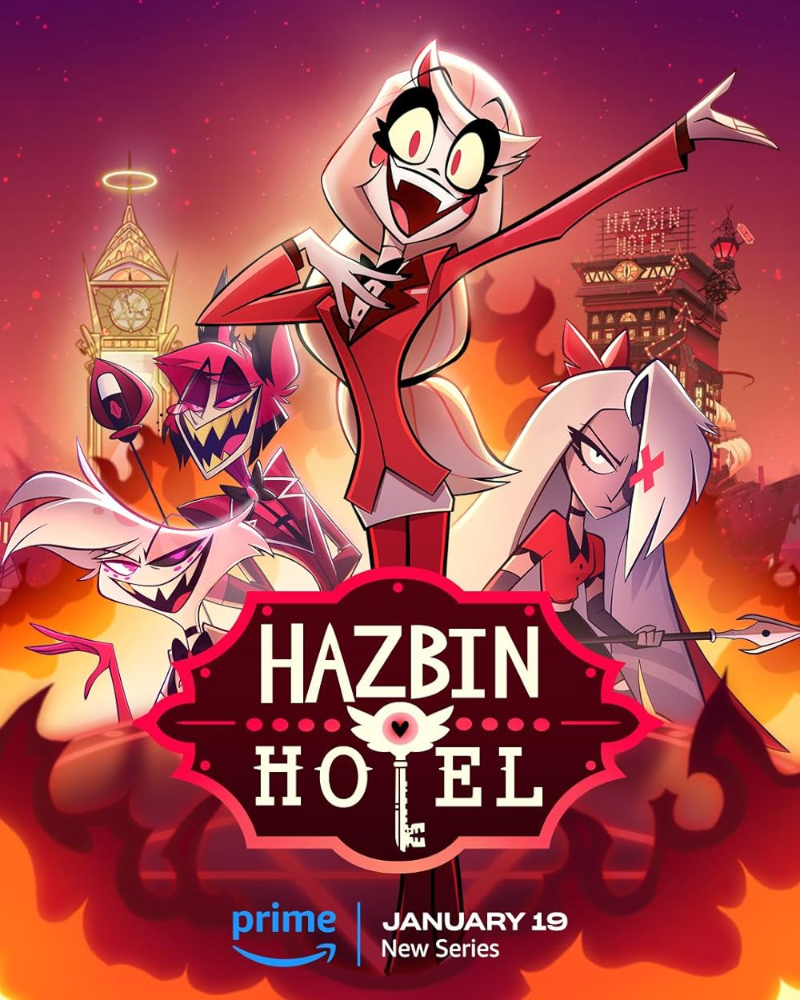 |
|
For love vagatha and carmilla |
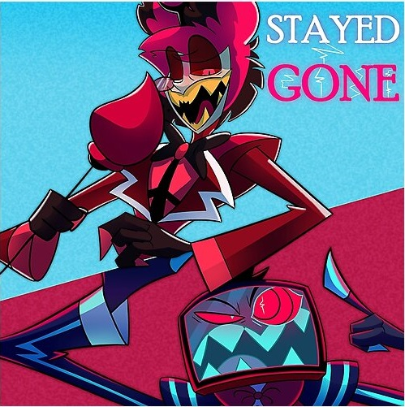
Stayed Gone Alastor and vox |
| 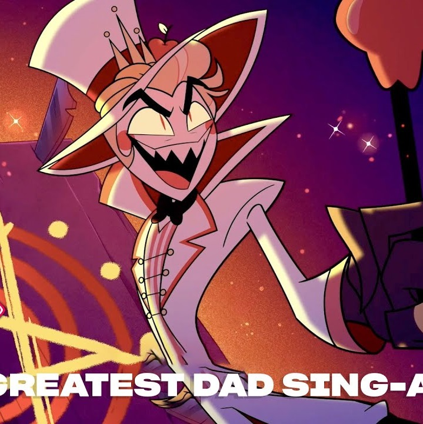
hell´s Greatest Dad Alastor and Luc |
|
| 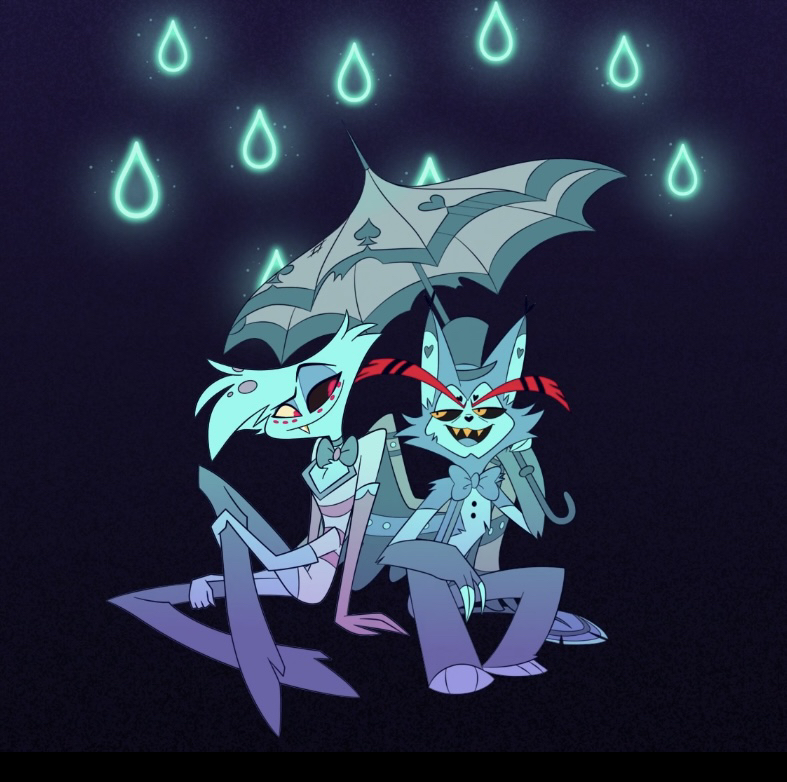
Loser Baby Angel Dust and Husk |
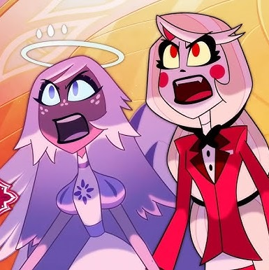
you didn´t know Emily and charlie |
| 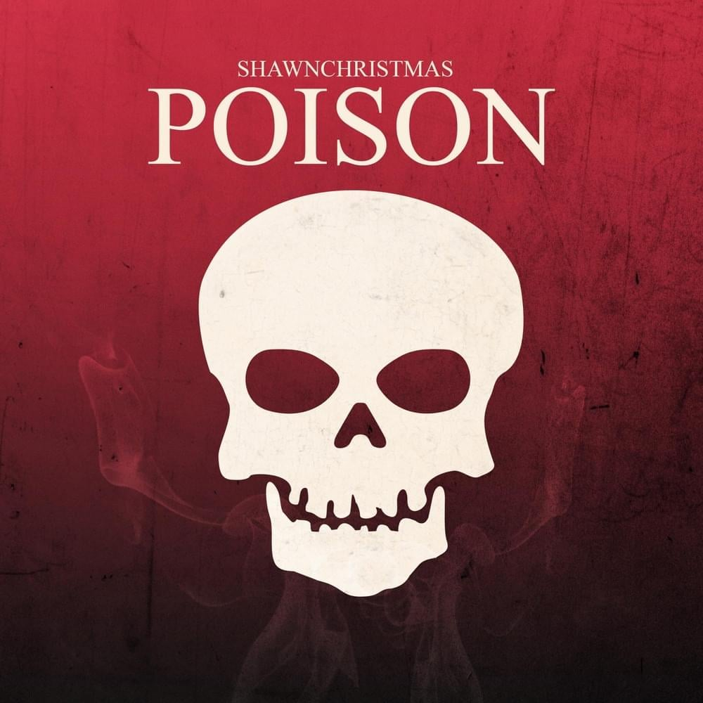
poison Angel dust |
Actores de voz |
|||||
| 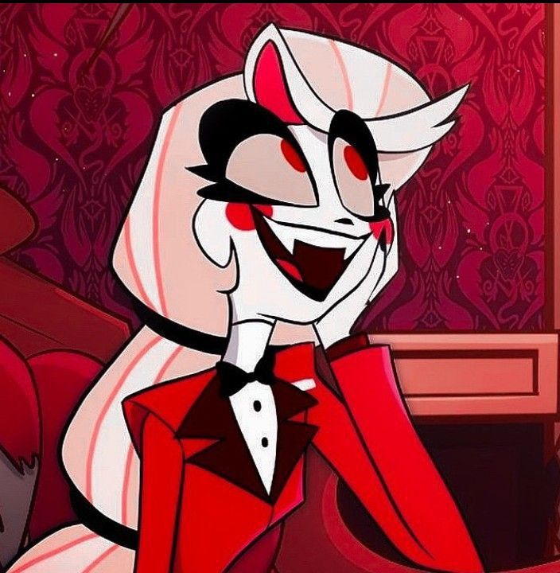 | Personaje: charlotte "charlie"morningstar Actor de voz: Erika Henningsen |
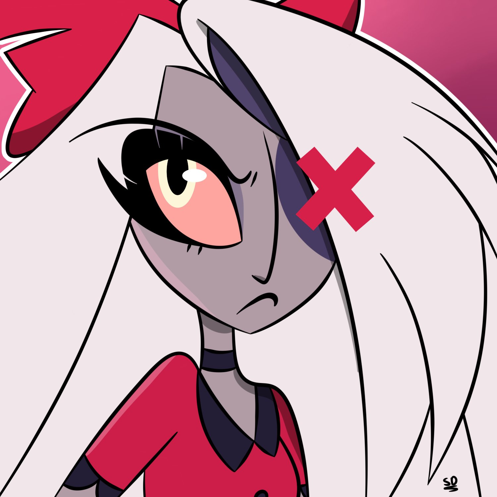 | Personaje: Vagatha "vaggie" Actor de voz: Stephanie Beatriz |
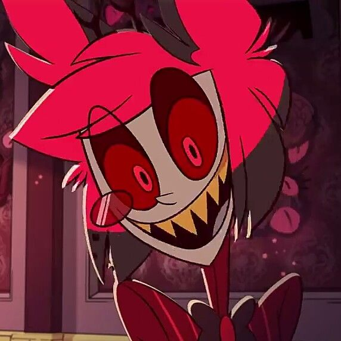 | Personaje: Alastor morningstar Actor de voz:Amir Talai |
| 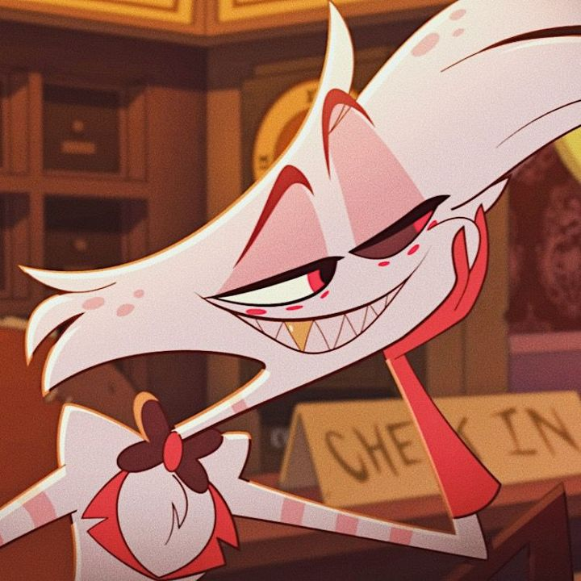 | Personaje: Anthony "Angel Dust" Actor de voz: Blake Roman |
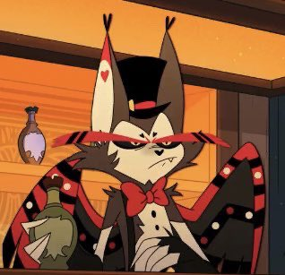 | Personaje: Husk Actor de voz: Keith David |
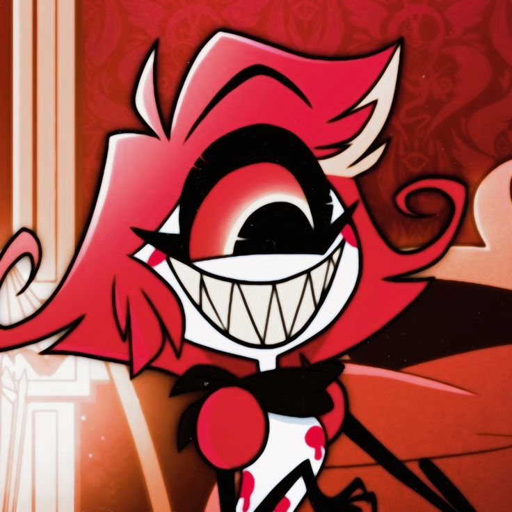 | Personaje: Niffty Actor de voz:Kimiko Glenn |
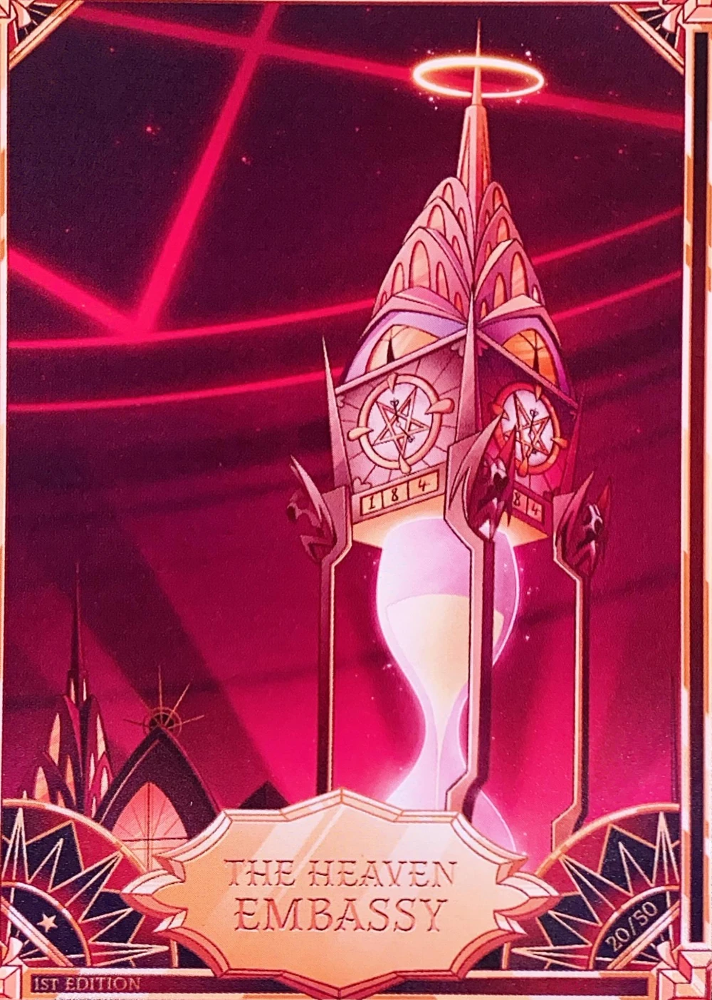Hell |
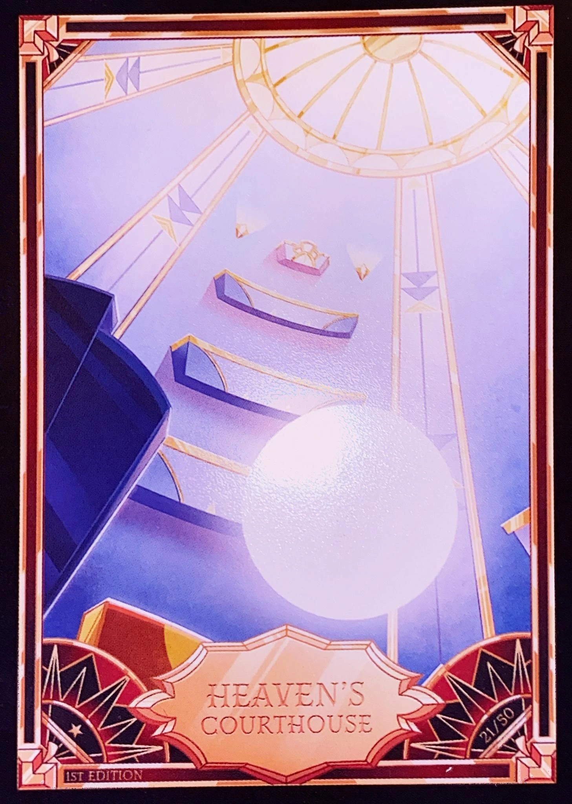Heaven |
Es un lugar sin reglas donde se tiene un libre albedrio pero no paz. |
Es un lugar donde tiene reglas pero sin preocupaciones, sereno y pacifico. |